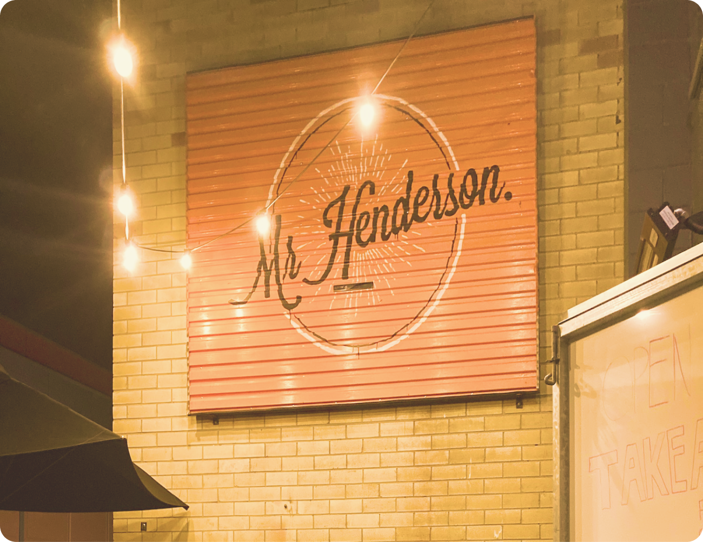
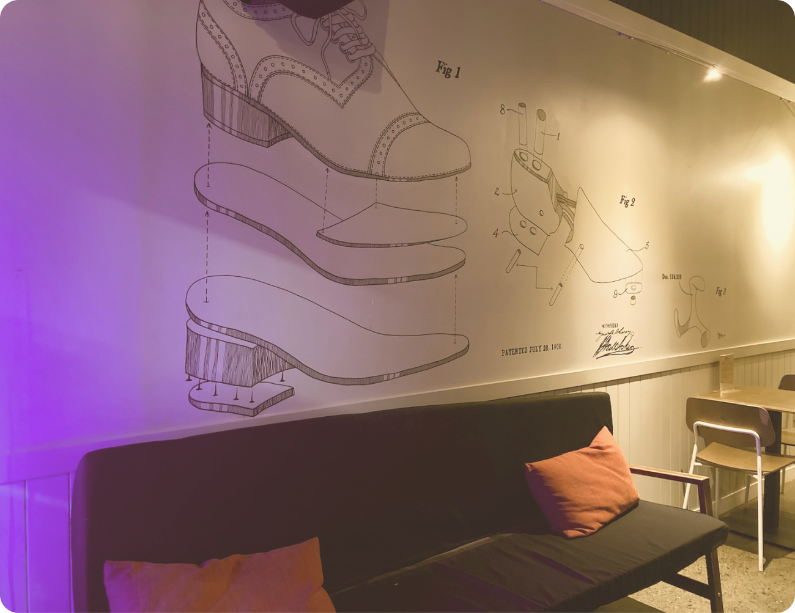
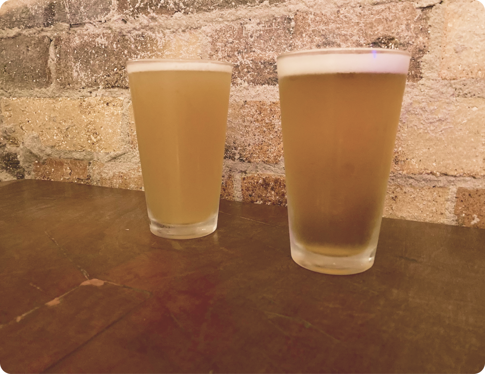

Mr Henderson is one of those places where you need a little bit of local knowledge to get in. You might be surprised to find you can’t get in from the street front... But wander round the back to find a cute courtyard and also the entrance.
Mr Henderson specialises in craft beers. You can find a wide selection of local and international beers; both on tap and canned. Don’t worry if craft beer’s not your thing. They also have an excellent selection of wine, plenty of cocktails and even a gin tasting paddle.
Murals, house plants and relaxed decor soften the industrial feeling space. From time to time it also acts as an art gallery with local Brisbane artists displaying work.
Mr Henderson features plenty of entertainment including live music, comedy and trivia. They also let you control the music in the space yourself with their Crowd DJ app.
Wednesday and Thursday Night’s are Hendo and Il Forno’s Pizza Special night. Order your pizza through Mr Henderson for a great discount on pizza and beer.
There are a bunch of delicious restaurants in town, and Mr Henderson is BYO food, so choose your favourite and bring it with you to enjoy with a drink. They also often have food trucks on Saturdays
The courtyard at the back of Mr Henderson is the perfect place for a drink on a hot night. It’s also doggo friendly and sometimes becomes a bit of a puppy party.
But if you prefer to relax indoors in air conditioning there’s plenty of space inside and plenty of mid century inspired decor.
If you’re seeing this view you’re at the wrong side! Go left, away from the post office and walk around the block to find the entrance.
Open late from Wednesday’s through to Saturday Mr Henderson is the perfect place to enjoy a drink on your Sandgate weekend away.